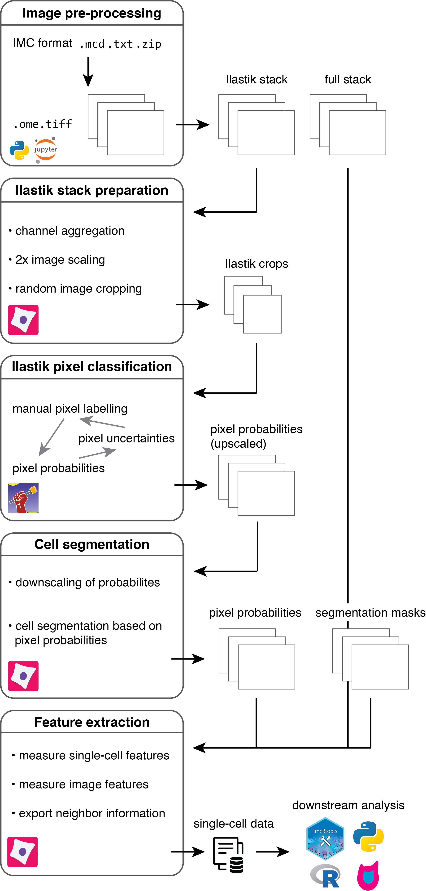

A flexible multiplexed image segmentation pipeline based on pixel classification
Measuring objects and their features in images is a basic step in many quantitative tissue image analysis workflows.
This repository presents a flexible and scalable image processing pipeline tailored to highly multiplexed images facilitating the segmentation of single cells across hundreds of images.
It is based on supervised pixel classification using Ilastik to distill segmentation relevant information from multiplexed images in a semi-supervised, automated fashion.
This feature reduction step is followed by standard image segmentation using CellProfiler.
The segmentation pipeline is accompanied by the imcsegpipe python package building up on readimc as well as customized CellProfiler modules, which facilitate the analysis of highly multiplexed images.
The pipeline is entirely build on open source tools, can be easily adapted to more specific problems and forms a basis for quantitative multiplexed tissue image analysis.
For a more detailed introduction to IMC as technolgy and common data analysis steps, please refer to the IMC workflow website.
The steinbock framework offers a dockerized version of the pipeline and extends the segmentation approach by deepcell segmentation.
This site gives detailed explanations of the individual steps of the pipeline (see below) to generate single-cell measurements from raw imaging data.
Scope
While we highlight the use of the pipeline with imaging mass cytometry (IMC) data, the concepts presented here can be easily applied to other highly multiplexed imaging data.
Starting with .ome.tiff or .tiff files, Ilastik pixel classification, segmentation and feature extraction can be performed in a technology-agnostic way.
Critical notes
There are some points that need to be considered when using this pipeline:
- The input files need to be
.zipfolders that contain the.mcdfiles and.txtfiles (see the pre-processing section) - It is recommended to acquire 5 or more channels to avoid potential downstream problems where images are considered to be of the RGBA type (red, green, blue, alpha).
Documentation
The guide displayed here gives detailed information on how to handle IMC images.
For additional information on CellProfiler, please refer to their manuals.
Getting started
For the main part of the analysis, you will need to install Ilastik and CellProfiler. The current setup is tested with Ilastik v1.3.3post3 and CellProfiler v4.2.1.
Furthermore, before running the analysis, you will need to setup a conda environment:
-
Clone the repository:
git clone --recursive https://github.com/BodenmillerGroup/ImcSegmentationPipeline.git -
Setup the conda environment:
cd ImcSegmentationPipelineconda env create -f environment.yml -
Configure CellProfiler to use the plugins by opening the CellProfiler GUI, selecting
Preferencesand setting theCellProfiler plugins directorytopath/to/ImcSegmentationPipeline/resources/ImcPluginsCP/pluginsand restart CellProfiler. Alternatively you can clone theImcPluginsCPrepository individually and set the path correctly in CellProfiler. -
Activate the environment created in 3. and start a jupyter instance
conda activate imcsegpipejupyter lab
This will automatically open a jupyter instance at http://localhost:8888/lab in your browser.
From there, you can open the scripts/imc_preprocessing.ipynb notebook and start the data pre-processing.
Image data types
Throughout this pipeline, images in TIFF format are saved as unsigned 16-bit images with an intensity range of 0 - 65535. For an overview on common image data types, please refer to the scikit-image documentation.
Pre-processing
To work with the generated imaging data, they will first be converted into OME-TIFF, multi-channel and single-channel TIFF formats that are compatible with most imaging software.
A key step of the pre-processing pipeline is also the selection of channels for (i) downstream cell measurements and (ii) ilastik pixel classification.
A CellProfiler pipeline is used to crop smaller images for reducing the computational burden during pixel labelling.
Please follow the pre-processing guide for more information.
Ilastik training
Image crops are labelled based on nuclear, cytoplasmic and background pixels. The classification probability is observed and regions with high uncertainty are re-labelled. Based on the specified labels, probabilities for each pixel belonging to the nuclear, cytoplasmic and background class are generated. These pixel-level propabilies are used to segment images in the next step.
Please follow the Ilastik instructions for more information.
CellProfiler image segmentation
A CellProfiler pipeline is used to segment cells based on the pixel probabilities generated in the previous step.
Segmentation masks are written out as single-channel TIFF images that match the input images in size, with non-zero grayscale values indicating the IDs of segmented objects (e.g. cells).
A second CellProfiler pipeline is then used to extract object-specific features (e.g. mean intensity per channel and object) and to write out these features as CSV file.
Please follow the segmentation instructions for more information.

Downstream analysis
For downstream analysis in R, please refer to the IMC Data Analysis workflow and the read_cpout function of the imcRtools package.
Contributors
Creator: Vito Zanotelli
Contributors: Jonas Windhager , Nils Eling , Milad Adibi
Maintainer: Milad Adibi
Citation
Please cite the following paper when using this workflow in your research:
Windhager, J., Zanotelli, V.R.T., Schulz, D. et al. An end-to-end workflow for multiplexed image processing and analysis. Nat Protoc (2023). https://doi.org/10.1038/s41596-023-00881-0
@article{Windhager2023,
author = {Windhager, Jonas and Zanotelli, Vito R.T. and Schulz, Daniel and Meyer, Lasse and Daniel, Michelle and Bodenmiller, Bernd and Eling, Nils},
title = {An end-to-end workflow for multiplexed image processing and analysis},
year = {2023},
doi = {10.1038/s41596-023-00881-0},
URL = {https://www.nature.com/articles/s41596-023-00881-0},
journal = {Nature Protocols}
}